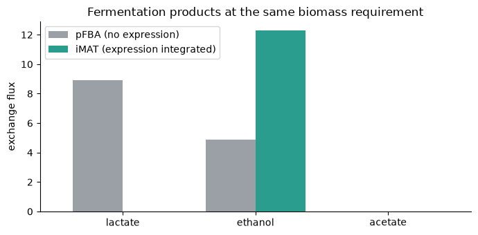
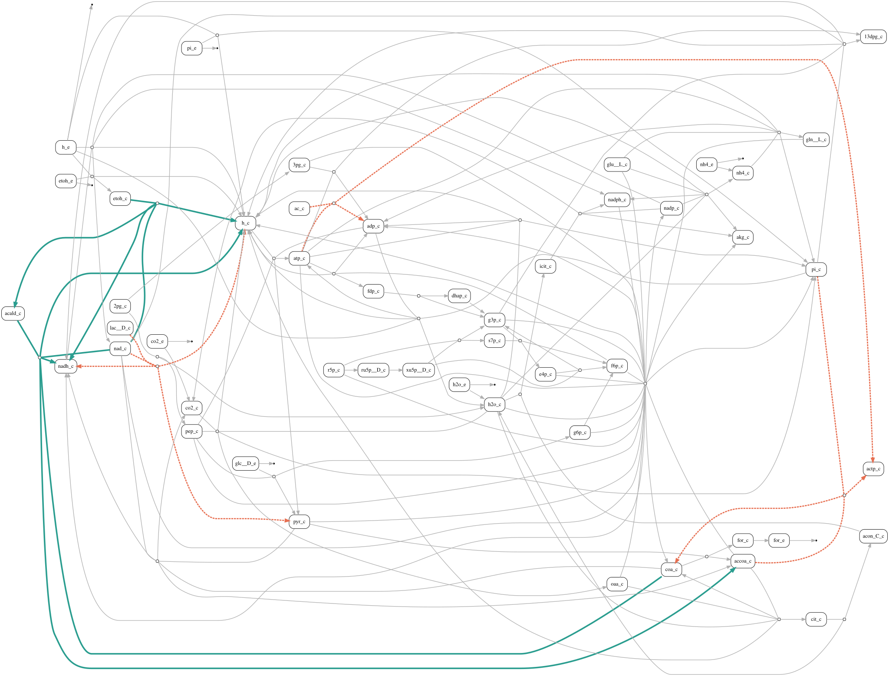

Integrating gene expression into metabolic models#
The preceding FBA and Multi-condition FBA guides inferred feasible metabolic states from stoichiometry, reaction bounds, and required phenotypes. Gene expression provides another source of information: it can help choose which of the many feasible pathways best represents a particular biological context.
This guide introduces gene-expression integration for one condition using iMAT, the method currently implemented in CORNETO. We will extract an expression-consistent metabolic state from the same COBRApy E. coli core model used in the FBA guides.
One established approach: iMAT#
iMAT was introduced by Shlomi and colleagues to infer context-specific metabolism from expression evidence. It retains the FBA feasible space:
It then uses qualitative expression evidence to select a flux state:
reactions supported by high expression are encouraged to carry flux;
reactions associated with low expression are encouraged to remain inactive;
reactions with intermediate or missing evidence are decided by network feasibility and the other objectives.
The optimization minimizes disagreement with this evidence. It does not convert transcript abundance into a flux value, and expression cannot override mass balance, reaction bounds, or a required phenotype. Because reaction activity is represented with indicators, iMAT is a mixed-integer optimization problem.
CORNETO provides this formulation through MultiSampleIMAT, but the framework is not restricted to the original iMAT objective. The built problem exposes its constraints, activity variables, and objective terms, making it straightforward to add biological constraints, compose other penalties, or implement methodological variations.
From genes to reaction evidence#
Metabolic models associate genes with reactions through gene–protein–reaction (GPR) rules. CORNETO applies these rules before building iMAT: an and relationship uses the least-supported required subunit, while an or relationship uses the best-supported alternative enzyme.
Normalized expression |
iMAT interpretation |
|---|---|
At or above the high threshold |
Encourage the mapped reaction to be active |
At or below the low threshold |
Encourage the mapped reaction to be inactive |
Between thresholds or missing |
Do not score the reaction |
eps defines the minimum absolute flux used to call a supported reaction active. The optional lambda_reg adds a small reaction-count penalty, favoring a compact network when several solutions fit the expression evidence equally well.
Relationship to COBRApy#
COBRApy remains the model-management layer in this workflow: it loads the metabolic model, exposes reactions and GPR rules, and supports standard FBA and pFBA analyses. CORNETO converts that model into its graph representation and composes the FBA constraints, expression-fit terms, reaction-activity indicators, and optional regularization in one optimization problem.
from contextlib import redirect_stdout
from io import StringIO
import matplotlib.pyplot as plt
import numpy as np
import pandas as pd
from cobra.flux_analysis import pfba
from cobra.io import load_model
from corneto.io import cobra_model_to_graph
from corneto.methods import MultiSampleIMAT
from corneto.methods.metabolism import evaluate_gpr_expression
with redirect_stdout(StringIO()):
model = load_model("textbook")
model.solver = "glpk"
G = cobra_model_to_graph(model)
reaction_ids = list(G.get_attr_from_edges("id"))
reaction_index = {reaction_id: i for i, reaction_id in enumerate(reaction_ids)}
biomass_id = "Biomass_Ecoli_core"
pd.Series(
{
"metabolites": len(model.metabolites),
"reactions": len(model.reactions),
"genes": len(model.genes),
"reactions with GPR rules": sum(bool(reaction.gene_reaction_rule) for reaction in model.reactions),
},
name="E. coli core model",
)
metabolites 72
reactions 95
genes 137
reactions with GPR rules 69
Name: E. coli core model, dtype: int64
Example: selecting an anaerobic fermentation program#
We now address a small biological question:
At a viable anaerobic growth rate, does the expression evidence support ethanol fermentation rather than alternative lactate or acetate routes?
Glucose uptake is limited to 10 units and oxygen uptake is blocked. We require a biomass flux of at least 0.1, but we do not maximize growth inside iMAT: the phenotype defines what the cell must accomplish, and expression evidence helps select how it accomplishes it.
The expression values below are deliberately simple, synthetic normalized log-expression values. They resemble the positive scale commonly obtained after transforming expression measurements, but they do not represent a particular experiment.
Check that the required phenotype is feasible#
Before integrating expression, standard FBA establishes the maximum anaerobic growth supported by the medium.
anaerobic_model = model.copy()
anaerobic_model.reactions.EX_glc__D_e.lower_bound = -10.0
anaerobic_model.reactions.EX_o2_e.bounds = (0.0, 1000.0)
maximum_growth = anaerobic_model.optimize().fluxes[biomass_id]
minimum_growth = 0.1
assert maximum_growth > minimum_growth
pd.Series(
{
"maximum anaerobic biomass": maximum_growth,
"minimum biomass required for inference": minimum_growth,
}
)
maximum anaerobic biomass 0.211663
minimum biomass required for inference 0.100000
dtype: float64
Define a qualitative expression profile#
Genes linked to ethanol production have expression values around 11–12. Genes linked to competing lactate and acetate production have values around 4–5. Values at or above 10 are classified as high, values at or below 6 as low, and values between the thresholds would remain unclassified.
high_expression_threshold = 10.0
low_expression_threshold = 6.0
gene_expression = {
# High expression: acetaldehyde and alcohol dehydrogenases
"b0351": 12.1,
"b1241": 11.6,
"b0356": 10.9,
"b1478": 11.4,
# Low expression: lactate dehydrogenase
"b1380": 4.2,
"b2133": 5.1,
# Low expression: phosphotransacetylase and acetate kinase
"b2297": 4.8,
"b2458": 5.3,
"b1849": 3.9,
"b2296": 4.6,
"b3115": 5.0,
}
expression_modules = pd.DataFrame(
[
{
"module": "ethanol formation",
"reactions": "ACALD, ALCD2x",
"genes": "b0351, b1241, b0356, b1478",
"expression range": "10.9-12.1",
"class": "high",
},
{
"module": "lactate formation",
"reactions": "LDH_D",
"genes": "b1380, b2133",
"expression range": "4.2-5.1",
"class": "low",
},
{
"module": "acetate formation",
"reactions": "PTAr, ACKr",
"genes": "b2297, b2458, b1849, b2296, b3115",
"expression range": "3.9-5.3",
"class": "low",
},
]
)
expression_modules
| module | reactions | genes | expression range | class | |
|---|---|---|---|---|---|
| 0 | ethanol formation | ACALD, ALCD2x | b0351, b1241, b0356, b1478 | 10.9-12.1 | high |
| 1 | lactate formation | LDH_D | b1380, b2133 | 4.2-5.1 | low |
| 2 | acetate formation | PTAr, ACKr | b2297, b2458, b1849, b2296, b3115 | 3.9-5.3 | low |
scored_reactions = ["ACALD", "ALCD2x", "LDH_D", "PTAr", "ACKr"]
gpr_table = pd.DataFrame(
{
"reaction": scored_reactions,
"GPR rule": [
model.reactions.get_by_id(reaction_id).gene_reaction_rule
for reaction_id in scored_reactions
],
}
)
gpr_table
| reaction | GPR rule | |
|---|---|---|
| 0 | ACALD | b0351 or b1241 |
| 1 | ALCD2x | b1478 or b0356 or b1241 |
| 2 | LDH_D | b2133 or b1380 |
| 3 | PTAr | b2297 or b2458 |
| 4 | ACKr | b2296 or b3115 or b1849 |
An expression-free reference#
For comparison, COBRApy pFBA fixes biomass at the required value and minimizes total flux without using expression. This provides one compact feasible state, not a context-specific expression fit.
reference_model = model.copy()
reference_model.reactions.EX_glc__D_e.lower_bound = -10.0
reference_model.reactions.EX_o2_e.bounds = (0.0, 1000.0)
reference_model.reactions.get_by_id(biomass_id).bounds = (minimum_growth, minimum_growth)
pfba_solution = pfba(reference_model)
assert np.isclose(pfba_solution.fluxes[biomass_id], minimum_growth)
pfba_solution.fluxes[[biomass_id, "EX_glc__D_e", "EX_lac__D_e", "EX_etoh_e", "EX_ac_e"]].to_frame(
"pFBA flux"
)
| pFBA flux | |
|---|---|
| Biomass_Ecoli_core | 0.100000 |
| EX_glc__D_e | -7.767692 |
| EX_lac__D_e | 8.928430 |
| EX_etoh_e | 4.868550 |
| EX_ac_e | 0.000000 |
Build and solve iMAT#
MultiSampleIMAT.build accepts gene scores, reaction bounds, and optional reaction objectives directly. Here the biomass lower bound represents viability, so no biomass objective is needed.
The small lambda_reg value breaks ties in favor of a compact active network. Expression disagreement remains the primary biological criterion in this example.
eps = 1e-3
imat = MultiSampleIMAT(
eps=eps,
lambda_reg=0.01,
high_expression_threshold=high_expression_threshold,
low_expression_threshold=low_expression_threshold,
)
imat_problem = imat.build(
G,
gene_expression=gene_expression,
reaction_bounds={
"EX_glc__D_e": (-10.0, 1000.0),
"EX_o2_e": (0.0, 1000.0),
biomass_id: (minimum_growth, None),
},
)
imat_problem.solve(solver="highs")
imat_fluxes = pd.Series(
np.asarray(imat_problem.expr.flow.value),
index=reaction_ids,
name="iMAT flux",
)
Did the inferred state agree with expression?#
For iMAT, the main interpretation is whether a scored reaction is active, not whether its flux magnitude matches its transcript abundance. Flux signs follow the direction in which each reaction is written in the model.
reaction_evidence = pd.Series(
{
"ACALD": "high",
"ALCD2x": "high",
"LDH_D": "low",
"PTAr": "low",
"ACKr": "low",
},
name="expression evidence",
)
expression_fit = pd.DataFrame(
{
"expression evidence": reaction_evidence,
"flux": imat_fluxes[reaction_evidence.index],
"active": imat_fluxes[reaction_evidence.index].abs() >= eps * (1 - eps),
}
)
assert expression_fit.loc[["ACALD", "ALCD2x"], "active"].all()
assert not expression_fit.loc[["LDH_D", "PTAr", "ACKr"], "active"].any()
assert imat_fluxes[biomass_id] >= minimum_growth - 1e-7
expression_fit
| expression evidence | flux | active | |
|---|---|---|---|
| ACALD | high | -12.273558 | True |
| ALCD2x | high | -12.273558 | True |
| LDH_D | low | 0.000000 | False |
| PTAr | low | 0.000000 | False |
| ACKr | low | 0.000000 | False |
Compare the selected fermentation routes#
At the same biomass value, pFBA and iMAT answer different questions. pFBA minimizes total flux and uses both lactate and ethanol routes. iMAT instead selects a state consistent with the supplied high-ethanol and low-lactate/acetate evidence.
The bars show representative flux solutions. Their magnitudes should not be interpreted as predictions from transcript abundance; the iMAT evidence distinguishes active from inactive reactions.
fermentation_products = {
"lactate": "EX_lac__D_e",
"ethanol": "EX_etoh_e",
"acetate": "EX_ac_e",
}
product_fluxes = pd.DataFrame(
{
"pFBA (no expression)": {
product: pfba_solution.fluxes[reaction_id]
for product, reaction_id in fermentation_products.items()
},
"iMAT (expression integrated)": {
product: imat_fluxes[reaction_id]
for product, reaction_id in fermentation_products.items()
},
}
)
assert product_fluxes.loc["ethanol", "iMAT (expression integrated)"] > eps
assert np.isclose(product_fluxes.loc["lactate", "iMAT (expression integrated)"], 0.0, atol=1e-7)
assert product_fluxes.loc["lactate", "pFBA (no expression)"] > eps
product_fluxes
| pFBA (no expression) | iMAT (expression integrated) | |
|---|---|---|
| lactate | 8.92843 | 0.000000 |
| ethanol | 4.86855 | 12.273558 |
| acetate | 0.00000 | 0.000000 |
ax = product_fluxes.plot.bar(
figsize=(7, 3.5),
color=["#9aa0a6", "#2a9d8f"],
width=0.75,
)
ax.set_ylabel("exchange flux")
ax.set_xlabel("")
ax.set_title("Fermentation products at the same biomass requirement")
ax.tick_params(axis="x", rotation=0)
ax.spines[["top", "right"]].set_visible(False)
plt.tight_layout()

Visualize the contextualized metabolic network#
The graph below contains the active iMAT network plus scored reactions that were kept inactive. High-expression active reactions are green, low-expression inactive reactions are dashed red, and active reactions without expression evidence are gray.
Meaning |
Color and style |
|---|---|
Active and supported by high expression |
Green |
Inactive and associated with low expression |
Dashed red |
Active without supplied expression evidence |
Gray |
active_reactions = imat_fluxes.abs() >= eps * (1 - eps)
scored_reaction_set = set(reaction_evidence.index)
displayed_reactions = np.array(
[
active_reactions.iloc[i] or reaction_id in scored_reaction_set
for i, reaction_id in enumerate(reaction_ids)
]
)
selected_indices = np.flatnonzero(displayed_reactions)
context_network = G.edge_subgraph(selected_indices)
edge_style = {}
for displayed_index, original_index in enumerate(selected_indices):
reaction_id = reaction_ids[original_index]
evidence = reaction_evidence.get(reaction_id)
if evidence == "high":
edge_style[displayed_index] = {"color": "#2a9d8f", "penwidth": "4"}
elif evidence == "low":
edge_style[displayed_index] = {
"color": "#e76f51",
"penwidth": "3",
"style": "dashed",
}
else:
edge_style[displayed_index] = {"color": "#b0b0b0", "penwidth": "1.5"}
context_network.plot(
graph_attr={"rankdir": "LR"},
node_attr={
"fixedsize": "false",
"shape": "box",
"style": "rounded",
"margin": "0.05,0.03",
},
custom_edge_attr=edge_style,
)

Advanced: compute and supply reaction scores directly#
Passing gene_expression= is convenient because MultiSampleIMAT performs thresholding and GPR mapping automatically. For method development or custom preprocessing, it can be useful to inspect that transformation and pass the final reaction-level evidence through reaction_scores= instead.
At this level, signed values no longer represent expression abundance. They encode the iMAT classification:
Reaction score |
Meaning in the optimization |
|---|---|
|
High-expression evidence: favor an active reaction |
|
Low-expression evidence: favor an inactive reaction |
|
No expression-fit term for the reaction |
First, threshold the positive expression measurements into categorical gene evidence.
gene_scores = {}
for gene_id, expression in gene_expression.items():
if expression >= high_expression_threshold:
gene_scores[gene_id] = 1.0
elif expression <= low_expression_threshold:
gene_scores[gene_id] = -1.0
else:
gene_scores[gene_id] = 0.0
pd.DataFrame(
{
"expression": pd.Series(gene_expression),
"gene score": pd.Series(gene_scores),
}
).sort_values("expression", ascending=False)
| expression | gene score | |
|---|---|---|
| b0351 | 12.1 | 1.0 |
| b1241 | 11.6 | 1.0 |
| b1478 | 11.4 | 1.0 |
| b0356 | 10.9 | 1.0 |
| b2458 | 5.3 | -1.0 |
| b2133 | 5.1 | -1.0 |
| b3115 | 5.0 | -1.0 |
| b2297 | 4.8 | -1.0 |
| b2296 | 4.6 | -1.0 |
| b1380 | 4.2 | -1.0 |
| b1849 | 3.9 | -1.0 |
Next, CORNETO’s evaluate_gpr_expression applies every model GPR rule to the gene scores in one call. Reactions with a final score of zero are omitted, so they remain governed by stoichiometry, bounds, and regularization rather than expression-fit terms. For several samples, the related evaluate_gpr_rules function evaluates the same rule list against multiple gene-score mappings.
gpr_rules = list(G.get_attr_from_edges("GPR"))
reaction_score_values = evaluate_gpr_expression(gpr_rules, gene_scores)
reaction_scores = {
reaction_id: float(score)
for reaction_id, score in zip(reaction_ids, reaction_score_values)
if not np.isclose(score, 0.0)
}
reaction_score_table = pd.DataFrame(
{
"GPR rule": {
reaction_id: gpr_rules[reaction_index[reaction_id]]
for reaction_id in reaction_scores
},
"reaction score": reaction_scores,
}
)
reaction_score_table
| GPR rule | reaction score | |
|---|---|---|
| ACALD | b0351 or b1241 | 1.0 |
| ACKr | b2296 or b3115 or b1849 | -1.0 |
| ALCD2x | b1478 or b0356 or b1241 | 1.0 |
| LDH_D | b2133 or b1380 | -1.0 |
| PTAr | b2297 or b2458 | -1.0 |
The reaction-score interface is closer to the optimization problem and is useful when reaction evidence comes from another mapping method or has already been curated. Threshold arguments are unnecessary because the scores already encode high and low reaction evidence.
reaction_score_problem = MultiSampleIMAT(
eps=eps,
lambda_reg=0.01,
).build(
G,
reaction_scores=reaction_scores,
reaction_bounds={
"EX_glc__D_e": (-10.0, 1000.0),
"EX_o2_e": (0.0, 1000.0),
biomass_id: (minimum_growth, None),
},
)
reaction_score_problem.solve(solver="highs")
reaction_score_fluxes = pd.Series(
np.asarray(reaction_score_problem.expr.flow.value),
index=reaction_ids,
)
interface_comparison = pd.DataFrame(
{
"reaction score": pd.Series(reaction_scores),
"active from gene_expression": (
imat_fluxes[list(reaction_scores)].abs() >= eps * (1 - eps)
),
"active from reaction_scores": (
reaction_score_fluxes[list(reaction_scores)].abs() >= eps * (1 - eps)
),
}
)
assert (
interface_comparison["active from gene_expression"]
== interface_comparison["active from reaction_scores"]
).all()
interface_comparison
| reaction score | active from gene_expression | active from reaction_scores | |
|---|---|---|---|
| ACALD | 1.0 | True | True |
| ACKr | -1.0 | False | False |
| ALCD2x | 1.0 | True | True |
| LDH_D | -1.0 | False | False |
| PTAr | -1.0 | False | False |
Interpretation and limitations#
The inferred state is stoichiometrically feasible, satisfies the anaerobic medium and growth requirement, activates the expression-supported ethanol route, and avoids the low-expression lactate and acetate routes. This illustrates the role of iMAT: expression resolves part of the ambiguity left by FBA by ranking feasible reaction-activity patterns.
The result remains a modeling hypothesis:
expression is a cue for likely activity, not an activity or flux measurement; protein abundance, post-translational modification, and metabolite-level regulation can decouple expression from flux;
thresholds determine which genes contribute evidence and should be checked for sensitivity;
iMAT infers reaction activity, not flux magnitude from expression;
low-expression reactions may remain active when network constraints or the required phenotype need them;
alternative expression-consistent optima may still exist.
The original iMAT paper reports a central role for post-transcriptional regulation and uses disagreements between expression and predicted activity to generate hypotheses about regulation beyond transcript abundance. They do not identify a mechanism on their own: additional protein, enzyme-activity, metabolite, or flux measurements are needed to distinguish biological regulation from data and model assumptions.
Real analyses should inspect threshold choices, biological constraints, expression coverage, and alternative solutions. Continue with multi-condition gene expression integration to learn how CORNETO couples expression-informed metabolic inference across several contexts.